ChatTTS
GitHub：2noise/ChatTTS: A generative speech model for daily dialogue.。他是这样介绍的：一款适用于日常对话的生成式语音模型。
- ChatTTS: Text-to-Speech For Chat
- ChatTTS - 自然、表达丰富的文本转语音
- CCmahua/ChatTTS-Enhanced: ChatTTS 语音增强版
- 6drf21e/ChatTTS_Speaker: ChatTTS 2000条音色稳定性打分🥇+区分男女年龄👧+在线试听🔈 ChatTTS 2K Speaker Stability Score & Categorized by Gender and Age & Audio Preview
- ChatTTS 稳定音色/区分男女 · 创空间
Windows
下载项目
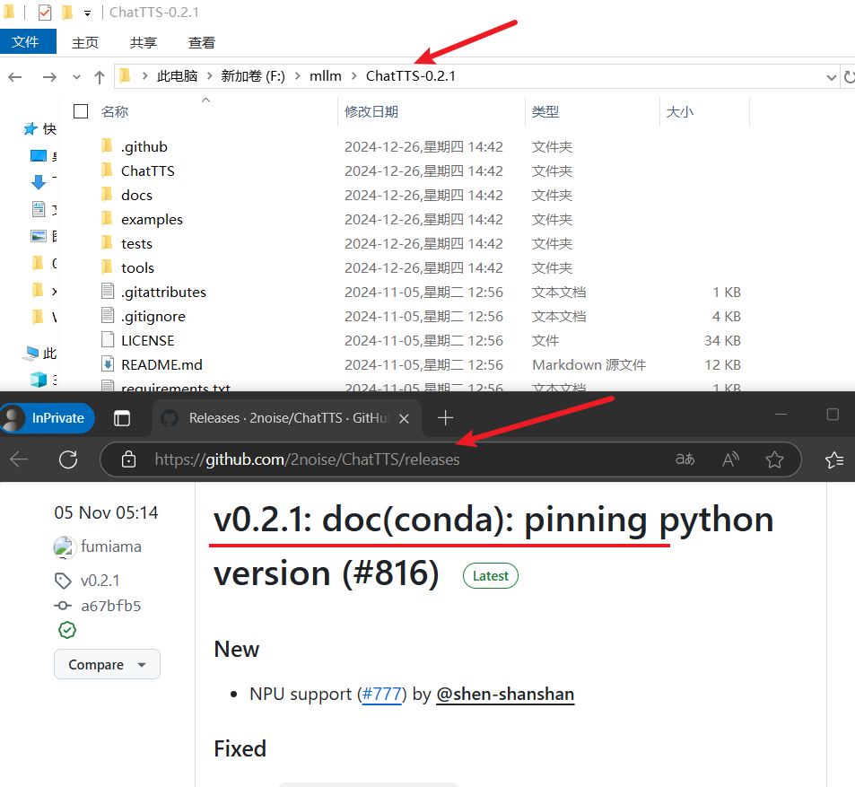
虚拟环境/安装依赖
conda create -n chattts python=3.11
conda activate chattts
pip install -r requirements.txt
点击查看详情
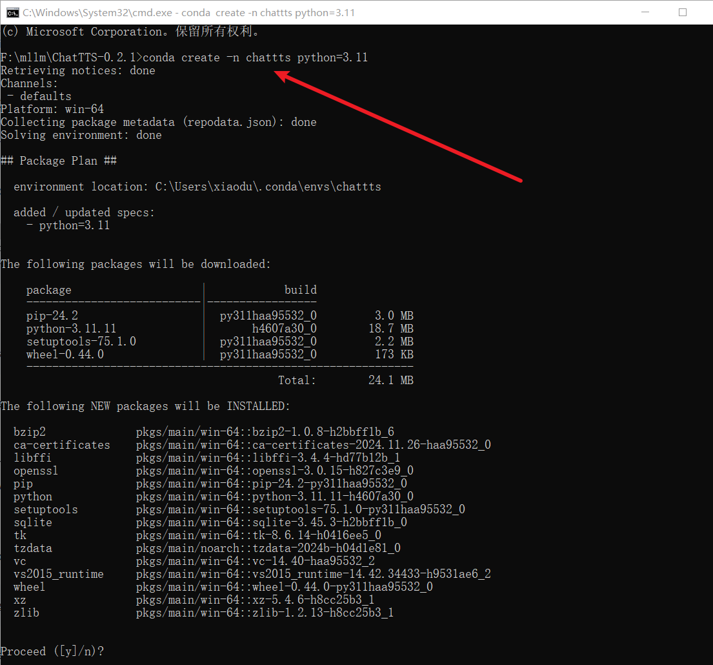
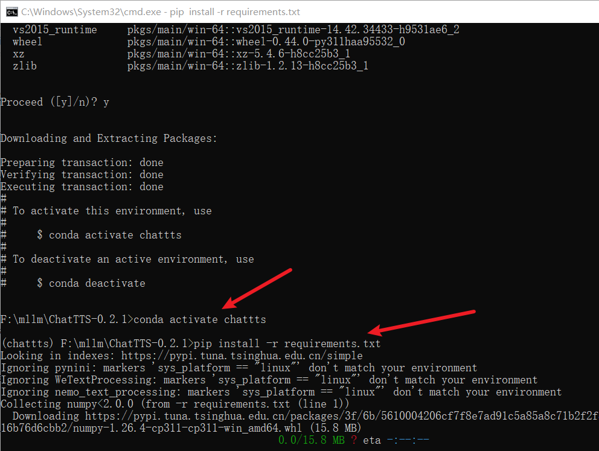
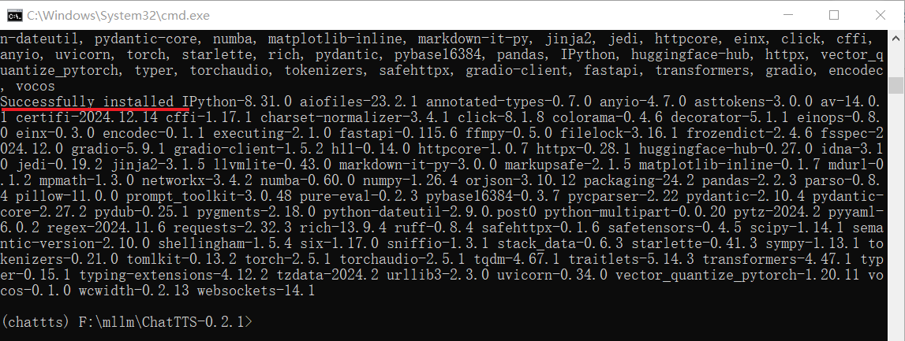
启动项目 - WebUI
我去，好顺利啊！这里直接启动带 Web 页面，对 Web 有天生的好感……
python examples/web/webui.py
这一启动可不得了啊，这一拉流日志都看不过来啊！自己偷偷下载了不少东西，请看：
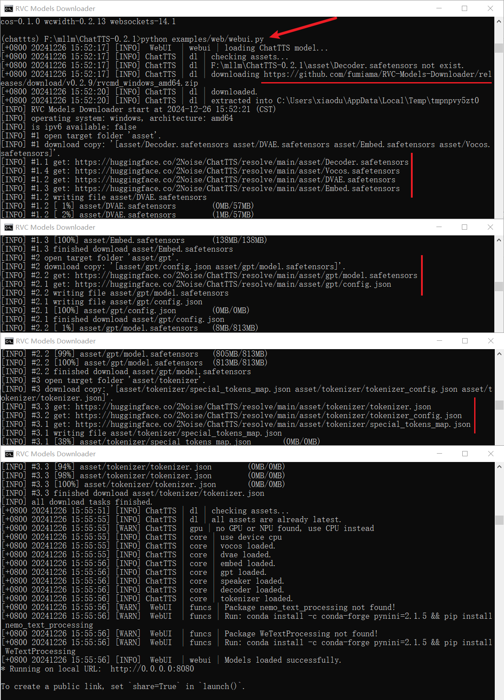

- https://github.com/fumiama/RVC-Models-Downloader
- https://hf-mirror.com/2Noise/ChatTTS （这里将链接替换成国内的了）
人家下载就下载呗，人家最后还不是跑起来了，你看：
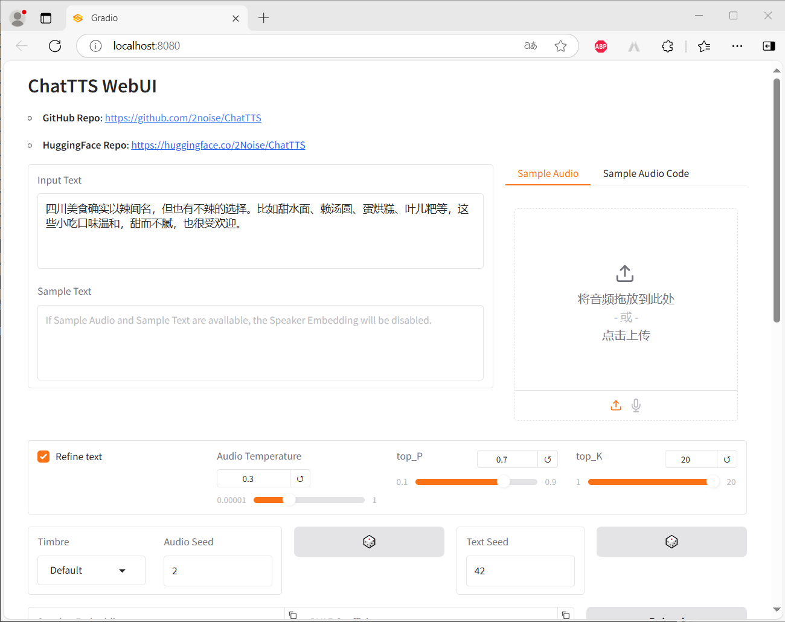
随后测试了一下，很顺利，看一下效果截图吧：
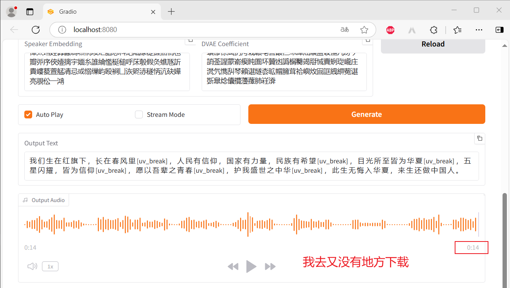
启动项目 - API
这才是咱最想要的，有了她，才能和其他的应用结合在一起。当然，项目还是很贴心的，提供了 API 启动方式：
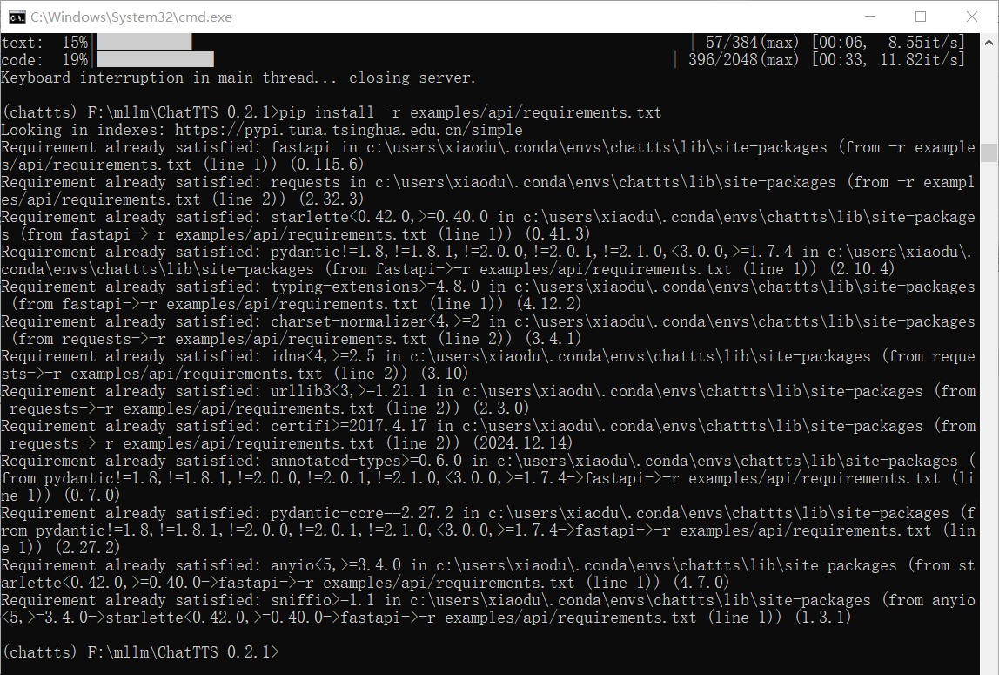
安装成功之后就可以启动了
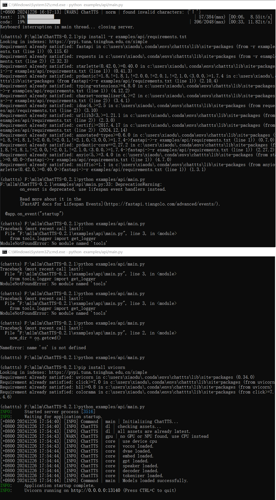
改动了好几处地方，这里就直接全部弄过来了，如下：
点击查看详情
import os
import sys
now_dir = os.getcwd()
sys.path.append(now_dir)
from pydantic import BaseModel
import torch
from tools.logger import get_logger
from tools.audio import pcm_arr_to_mp3_view
import ChatTTS
from typing import Optional
import io
import zipfile
import uvicorn
from fastapi import FastAPI
from fastapi.responses import StreamingResponse
from contextlib import asynccontextmanager
if sys.platform == "darwin":
os.environ["PYTORCH_ENABLE_MPS_FALLBACK"] = "1"
logger = get_logger("Command")
@asynccontextmanager
async def lifespan(app: FastAPI):
global chat
chat = ChatTTS.Chat(get_logger("ChatTTS"))
logger.info("Initializing ChatTTS...")
if chat.load():
logger.info("Models loaded successfully.")
else:
logger.error("Models load failed.")
sys.exit(1)
yield
app = FastAPI(lifespan=lifespan)
class ChatTTSParams(BaseModel):
text: list[str]
stream: bool = False
lang: Optional[str] = None
skip_refine_text: bool = False
refine_text_only: bool = False
use_decoder: bool = True
do_text_normalization: bool = True
do_homophone_replacement: bool = False
params_refine_text: ChatTTS.Chat.RefineTextParams
params_infer_code: ChatTTS.Chat.InferCodeParams
@app.post("/generate_voice")
async def generate_voice(params: ChatTTSParams):
logger.info("Text input: %s", str(params.text))
# audio seed
if params.params_infer_code.manual_seed is not None:
torch.manual_seed(params.params_infer_code.manual_seed)
params.params_infer_code.spk_emb = chat.sample_random_speaker()
# text seed for text refining
if params.params_refine_text:
text = chat.infer(
text=params.text, skip_refine_text=False, refine_text_only=True
)
logger.info(f"Refined text: {text}")
else:
# no text refining
text = params.text
logger.info("Use speaker:")
logger.info(params.params_infer_code.spk_emb)
logger.info("Start voice inference.")
wavs = chat.infer(
text=text,
stream=params.stream,
lang=params.lang,
skip_refine_text=params.skip_refine_text,
use_decoder=params.use_decoder,
do_text_normalization=params.do_text_normalization,
do_homophone_replacement=params.do_homophone_replacement,
params_infer_code=params.params_infer_code,
params_refine_text=params.params_refine_text,
)
logger.info("Inference completed.")
# zip all of the audio files together
buf = io.BytesIO()
with zipfile.ZipFile(
buf, "a", compression=zipfile.ZIP_DEFLATED, allowZip64=False
) as f:
for idx, wav in enumerate(wavs):
f.writestr(f"{idx}.mp3", pcm_arr_to_mp3_view(wav))
logger.info("Audio generation successful.")
buf.seek(0)
response = StreamingResponse(buf, media_type="application/zip")
response.headers["Content-Disposition"] = "attachment; filename=audio_files.zip"
return response
if __name__ == "__main__":
uvicorn.run(app, host="0.0.0.0", port=13140)
之后就可以成功启动了，如下图：
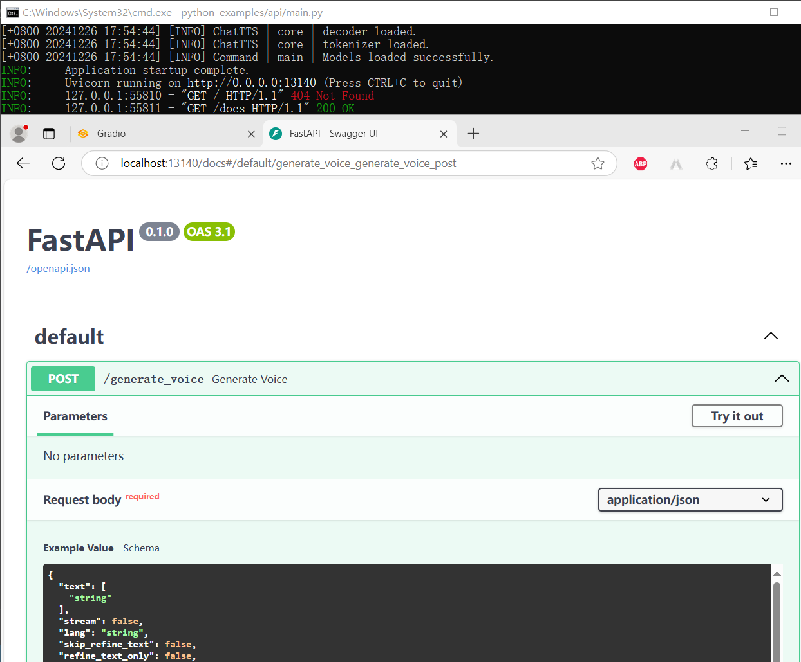
点击查看具体的依赖版本
# requirements.txt
numpy==1.26.4
numba==0.60.0
torch==2.5.1
torchaudio==2.5.1
tqdm==4.67.1
vector_quantize_pytorch
transformers==4.47.1
vocos==0.1.0
IPython==8.31.0
gradio==5.9.1
pybase16384==0.3.7
pynini==2.1.5; sys_platform == 'linux'
WeTextProcessing; sys_platform == 'linux'
nemo_text_processing; sys_platform == 'linux'
av==14.0.1
pydub==0.25.1
# examples/api/requirements.txt
fastapi==0.115.6
requests==2.32.3
uvicorn==0.34.0
心想：现在总行了吧！你想多了，还是有问题啊，如下：
点击查看错误堆栈
INFO: 127.0.0.1:55969 - "POST /generate_voice HTTP/1.1" 500 Internal Server Error
ERROR: Exception in ASGI application
Traceback (most recent call last):
File "C:\Users\xiaodu\.conda\envs\chattts\Lib\site-packages\uvicorn\protocols\http\h11_impl.py", line 403, in run_asgi
result = await app( # type: ignore[func-returns-value]
^^^^^^^^^^^^^^^^^^^^^^^^^^^^^^^^^^^^^^^^^^^^^^
File "C:\Users\xiaodu\.conda\envs\chattts\Lib\site-packages\uvicorn\middleware\proxy_headers.py", line 60, in __call__
return await self.app(scope, receive, send)
^^^^^^^^^^^^^^^^^^^^^^^^^^^^^^^^^^^^
File "C:\Users\xiaodu\.conda\envs\chattts\Lib\site-packages\fastapi\applications.py", line 1054, in __call__
await super().__call__(scope, receive, send)
File "C:\Users\xiaodu\.conda\envs\chattts\Lib\site-packages\starlette\applications.py", line 113, in __call__
await self.middleware_stack(scope, receive, send)
File "C:\Users\xiaodu\.conda\envs\chattts\Lib\site-packages\starlette\middleware\errors.py", line 187, in __call__
raise exc
File "C:\Users\xiaodu\.conda\envs\chattts\Lib\site-packages\starlette\middleware\errors.py", line 165, in __call__
await self.app(scope, receive, _send)
File "C:\Users\xiaodu\.conda\envs\chattts\Lib\site-packages\starlette\middleware\exceptions.py", line 62, in __call__
await wrap_app_handling_exceptions(self.app, conn)(scope, receive, send)
File "C:\Users\xiaodu\.conda\envs\chattts\Lib\site-packages\starlette\_exception_handler.py", line 53, in wrapped_app
raise exc
File "C:\Users\xiaodu\.conda\envs\chattts\Lib\site-packages\starlette\_exception_handler.py", line 42, in wrapped_app
await app(scope, receive, sender)
File "C:\Users\xiaodu\.conda\envs\chattts\Lib\site-packages\starlette\routing.py", line 715, in __call__
await self.middleware_stack(scope, receive, send)
File "C:\Users\xiaodu\.conda\envs\chattts\Lib\site-packages\starlette\routing.py", line 735, in app
await route.handle(scope, receive, send)
File "C:\Users\xiaodu\.conda\envs\chattts\Lib\site-packages\starlette\routing.py", line 288, in handle
await self.app(scope, receive, send)
File "C:\Users\xiaodu\.conda\envs\chattts\Lib\site-packages\starlette\routing.py", line 76, in app
await wrap_app_handling_exceptions(app, request)(scope, receive, send)
File "C:\Users\xiaodu\.conda\envs\chattts\Lib\site-packages\starlette\_exception_handler.py", line 53, in wrapped_app
raise exc
File "C:\Users\xiaodu\.conda\envs\chattts\Lib\site-packages\starlette\_exception_handler.py", line 42, in wrapped_app
await app(scope, receive, sender)
File "C:\Users\xiaodu\.conda\envs\chattts\Lib\site-packages\starlette\routing.py", line 73, in app
response = await f(request)
^^^^^^^^^^^^^^^^
File "C:\Users\xiaodu\.conda\envs\chattts\Lib\site-packages\fastapi\routing.py", line 301, in app
raw_response = await run_endpoint_function(
^^^^^^^^^^^^^^^^^^^^^^^^^^^^
File "C:\Users\xiaodu\.conda\envs\chattts\Lib\site-packages\fastapi\routing.py", line 212, in run_endpoint_function
return await dependant.call(**values)
^^^^^^^^^^^^^^^^^^^^^^^^^^^^^^
File "F:\mllm\ChatTTS-0.2.1\examples\api\main.py", line 92, in generate_voice
wavs = chat.infer(
^^^^^^^^^^^
File "F:\mllm\ChatTTS-0.2.1\ChatTTS\core.py", line 221, in infer
return next(res_gen)
^^^^^^^^^^^^^
File "F:\mllm\ChatTTS-0.2.1\ChatTTS\core.py", line 385, in _infer
for result in self._infer_code(
^^^^^^^^^^^^^^^^^
File "C:\Users\xiaodu\.conda\envs\chattts\Lib\site-packages\torch\utils\_contextlib.py", line 116, in decorate_context
return func(*args, **kwargs)
^^^^^^^^^^^^^^^^^^^^^
File "F:\mllm\ChatTTS-0.2.1\ChatTTS\core.py", line 485, in _infer_code
self.speaker.decode_prompt(params.spk_smp)
File "C:\Users\xiaodu\.conda\envs\chattts\Lib\site-packages\torch\utils\_contextlib.py", line 116, in decorate_context
return func(*args, **kwargs)
^^^^^^^^^^^^^^^^^^^^^
File "F:\mllm\ChatTTS-0.2.1\ChatTTS\model\speaker.py", line 112, in decode_prompt
lzma.decompress(
File "C:\Users\xiaodu\.conda\envs\chattts\Lib\lzma.py", line 343, in decompress
res = decomp.decompress(data)
^^^^^^^^^^^^^^^^^^^^^^^
_lzma.LZMAError: Corrupt input data
这个错误发现是
Python 包
我去，其他的都是浮云，这里才是重点，都有 Python 包了，还要啥 API 啊，集成更方便了👍👍👍。官网的“开发教程”章节给出了使用方法：
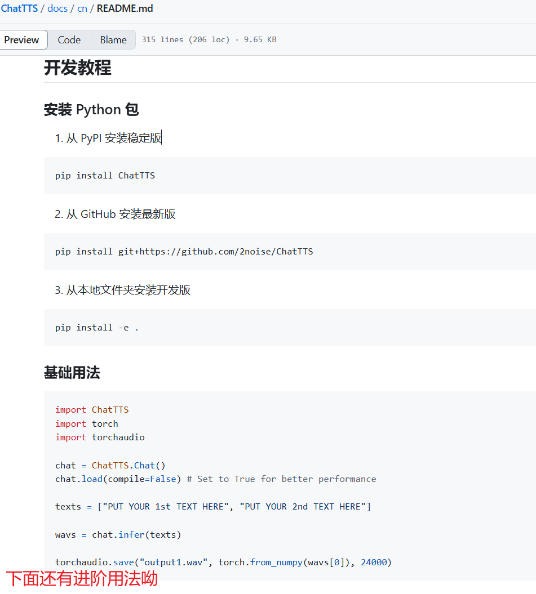